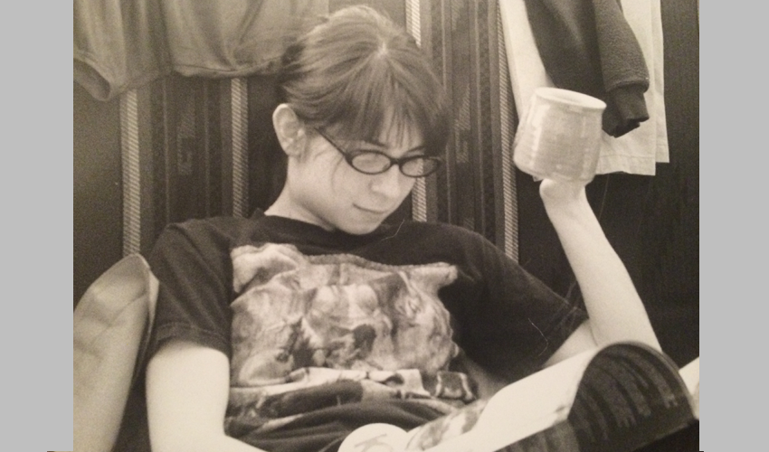
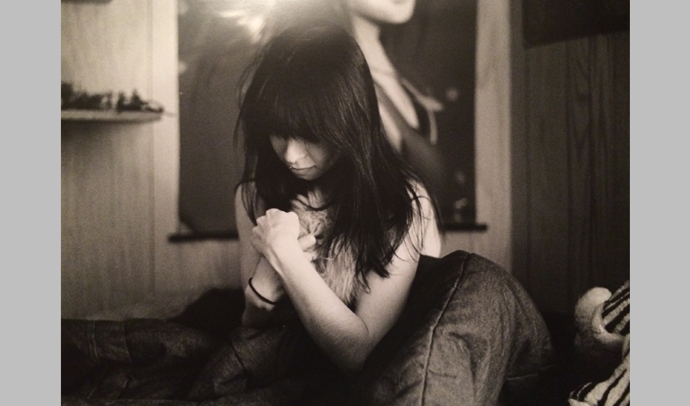
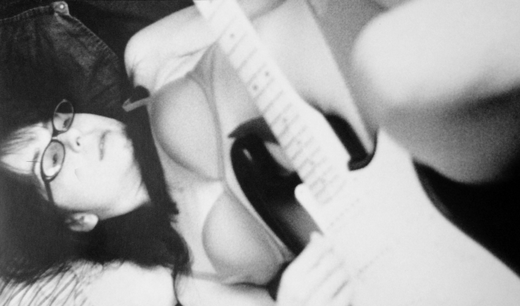
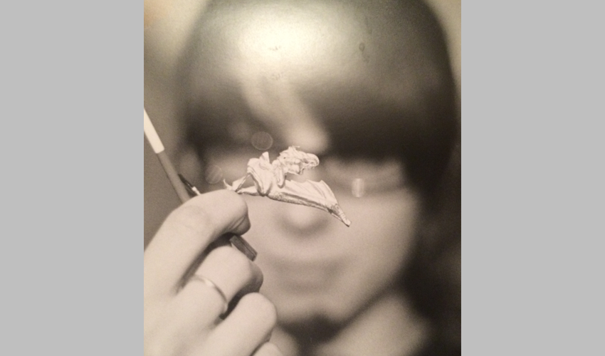

This photograph is the first in a series of self-portraits inspired by Cindy Sherman. I was interested in exploring my own identity as it corresponds to my more feminine side. To accomplish this goal, I had a female friend come over to represent me and pose for these photographs. In this photo I've represented myself enjoying one of my typical pastimes; reading comics. The model is dressed like me, in an effort to imply that despite being female, I am the subject of this photograph.

This photo is probably the most successful of the whole project. The photo suggests a vulnerability and longing for comfort that I think is made more poignant by the female model. This is the photo I believe shows off what I wanted to express the best by portraying myself with a female model.

The third photo of this series is likely my favorite because I think it works the best for me on a personal level. In this picture the model appears in a sexual and appealing way holding my guitar. It highlights the feeling of attractiveness that I associate strongly with my feminine side.

In this final photograph I represented myself focused on one of my hobbies. The out of focus face in the background helps obscure the difference between myself and the model, attempting a more literal interpreation of the project.